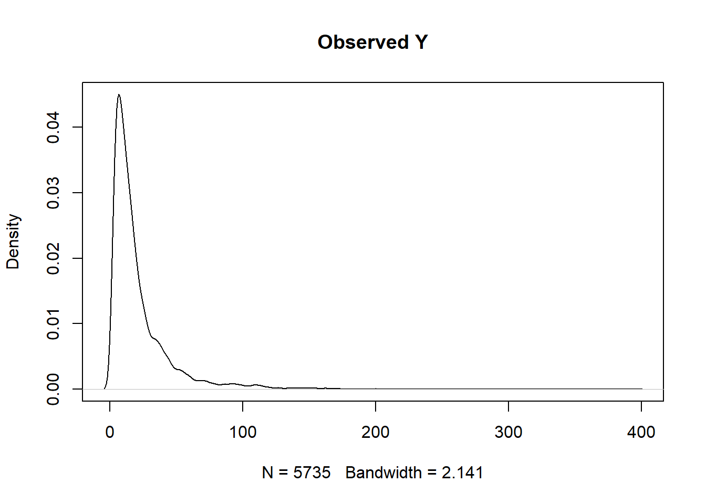
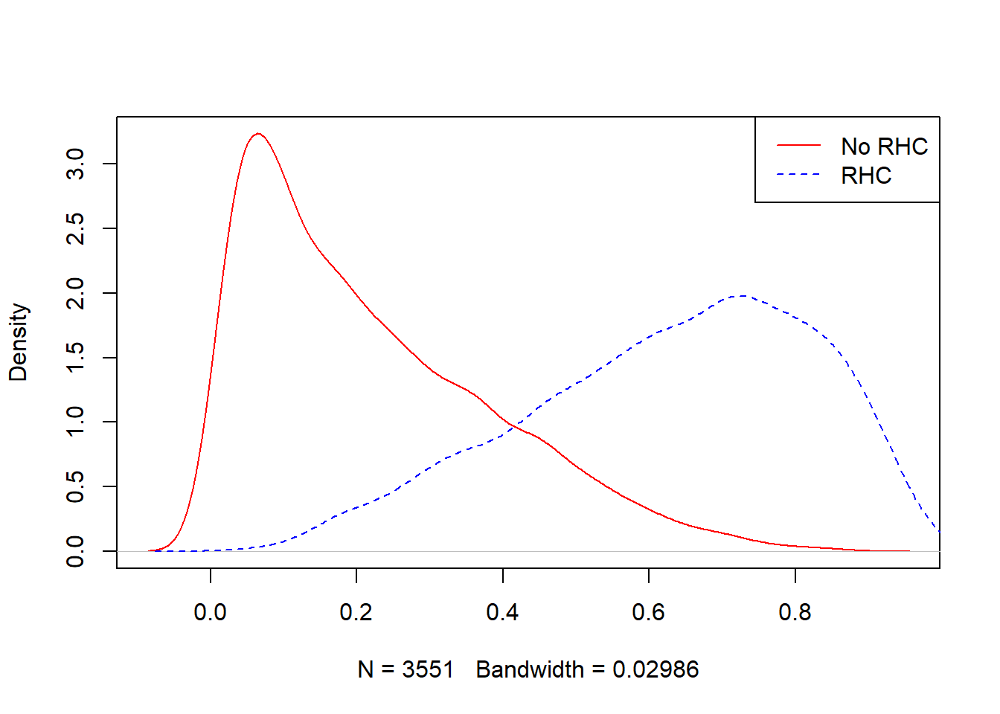

Chapter 6 TMLE
6.1 Doubly robust estimators
Now that we have covered
- outcome models (e.g., G-computation) and
- exposure models (e.g., propensity score models),
let us talk about doubly robust (DR) estimators. DR has several important properties:
- They use information from both
- the exposure and
- the outcome models.
- They provide a consistent estimator if either of the above mentioned models is correctly specified.
- consistent estimator means as the sample size increases, distribution of the estimates gets concentrated near the true parameter
- They provide an efficient estimator if both the exposure and the outcome model are correctly specified.
- efficient estimator means estimates approximates the true parameter in terms of a chosen loss function (e.g., could be RMSE).
6.2 TMLE
Targeted Maximum Likelihood Estimation (TMLE) is a DR method, using
- an initial estimate from the outcome model (G-computation)
- the propensity score (exposure) model to improve.
In addition to being DR, TMLE has several other desirable properties:
- It allows the use of data-adaptive algorithms like machine learning without sacrificing interpretability.
- ML is only used in intermediary steps to develop the estimator, so the optimization and interpretation of the estimator as a whole remains intact.
- The use of machine learning can help mitigate model misspecification.
- It has been shown to outperform other methods, particularly in sparse data settings.
6.3 TMLE Steps
According to Luque-Fernandez et al. (2018), we need to the following steps (2-7) for obtaining point estimates when dealing with binary outcome. But as we are dealing with continuous outcome, we need an added transformation step at the beginning, and also at the end.
| Step 1 | Transformation of continuous outcome variable |
| Step 2 | Predict from initial outcome modelling: G-computation |
| Step 3 | Predict from propensity score model |
| Step 4 | Estimate clever covariate \(H\) |
| Step 5 | Estimate fluctuation parameter \(\epsilon\) |
| Step 6 | Update the initial outcome model prediction based on targeted adjustment of the initial predictions using the PS model |
| Step 7 | Find treatment effect estimate |
| Step 8 | Transform back the treatment effect estimate in the original outcome scale |
| Step 9 | Confidence interval estimation based on closed form formula |
- We will go through the steps of TMLE one-by-one, using the RHC dataset presented in previous chapters.
- As a reminder, the exposure we are considering is RHC (right heart catheterization) and the outcome of interest is length of stay in the hospital.
# Read the data saved at the last chapter
ObsData <- readRDS(file = "data/rhcAnalytic.RDS")6.4 Step 1: Transformation of Y
In our example, the outcome is continuous.
summary(ObsData$Y)## Min. 1st Qu. Median Mean 3rd Qu. Max.
## 2.00 7.00 14.00 21.56 25.00 394.00plot(density(ObsData$Y), main = "Observed Y")
min.Y <- min(ObsData$Y)
max.Y <- max(ObsData$Y)
ObsData$Y.bounded <- (ObsData$Y-min.Y)/(max.Y-min.Y)Check the range of our transformed outcome variable
summary(ObsData$Y.bounded)## Min. 1st Qu. Median Mean 3rd Qu. Max.
## 0.00000 0.01276 0.03061 0.04990 0.05867 1.000006.5 Step 2: Initial G-comp estimate
We construct our outcome model, and make our initial predictions.
For this step, we will use SuperLearner. This requires no apriori assumptions about the structure of our outcome model.
library(SuperLearner)
set.seed(123)
ObsData.noY <- dplyr::select(ObsData, !c(Y,Y.bounded))
Y.fit.sl <- SuperLearner(Y=ObsData$Y.bounded,
X=ObsData.noY,
cvControl = list(V = 3),
SL.library=c("SL.glm",
"SL.glmnet",
"SL.xgboost"),
method="method.CC_nloglik",
family="gaussian")ObsData$init.Pred <- predict(Y.fit.sl, newdata = ObsData.noY,
type = "response")$pred
summary(ObsData$init.Pred)## V1
## Min. :0.00100
## 1st Qu.:0.03723
## Median :0.04948
## Mean :0.04877
## 3rd Qu.:0.06067
## Max. :0.13659# alternatively, we could write
# ObsData$init.Pred <- Y.fit.sl$SL.predict- We will use these initial prediction values later.
\(Q^0(A,L)\) is often used to represent the predictions from initial G-comp model.
6.5.1 Get predictions under both treatments \(A = 0\) and \(1\)
- We could estimate the treatment effect from this initial model.
- We will need the \(Q^0(A=1,L)\) and \(Q^0(A=0,L)\) predictions later.
- \(Q^0(A=1,L)\) predictions:
ObsData.noY$A <- 1
ObsData$Pred.Y1 <- predict(Y.fit.sl, newdata = ObsData.noY,
type = "response")$pred
summary(ObsData$Pred.Y1)## V1
## Min. :0.00100
## 1st Qu.:0.04240
## Median :0.05429
## Mean :0.05322
## 3rd Qu.:0.06446
## Max. :0.13659- \(Q^0(A=0,L)\) predictions:
ObsData.noY$A <- 0
ObsData$Pred.Y0 <- predict(Y.fit.sl, newdata = ObsData.noY,
type = "response")$pred
summary(ObsData$Pred.Y0)## V1
## Min. :0.00100
## 1st Qu.:0.03524
## Median :0.04708
## Mean :0.04609
## 3rd Qu.:0.05734
## Max. :0.126526.5.2 Get initial treatment effect estimate
ObsData$Pred.TE <- ObsData$Pred.Y1 - ObsData$Pred.Y0 summary(ObsData$Pred.TE) ## V1
## Min. :-0.010333
## 1st Qu.: 0.006682
## Median : 0.007071
## Mean : 0.007134
## 3rd Qu.: 0.007541
## Max. : 0.0215926.6 Step 3: PS model
At this point, we have our initial estimate and now want to perform our targeted improvement.
library(SuperLearner)
set.seed(124)
ObsData.noYA <- dplyr::select(ObsData, !c(Y,Y.bounded,
A,init.Pred,
Pred.Y1,Pred.Y0,
Pred.TE))
PS.fit.SL <- SuperLearner(Y=ObsData$A,
X=ObsData.noYA,
cvControl = list(V = 3),
SL.library=c("SL.glm",
"SL.glmnet",
"SL.xgboost"),
method="method.CC_nloglik",
family="binomial") all.pred <- predict(PS.fit.SL, type = "response")
ObsData$PS.SL <- all.pred$pred
These propensity score predictions (PS.SL) are represented as \(g(A_i=1|L_i)\).
- We can estimate \(g(A_i=0|L_i)\) as \(1 - g(A_i=1|L_i)\) or
1 - PS.SL.
summary(ObsData$PS.SL)## V1
## Min. :0.002806
## 1st Qu.:0.133409
## Median :0.329181
## Mean :0.375143
## 3rd Qu.:0.596584
## Max. :0.983057tapply(ObsData$PS.SL, ObsData$A, summary)## $`0`
## Min. 1st Qu. Median Mean 3rd Qu. Max.
## 0.002806 0.079637 0.177020 0.219962 0.327519 0.866585
##
## $`1`
## Min. 1st Qu. Median Mean 3rd Qu. Max.
## 0.03745 0.49045 0.65384 0.62745 0.78263 0.98306plot(density(ObsData$PS.SL[ObsData$A==0]),
col = "red", main = "")
lines(density(ObsData$PS.SL[ObsData$A==1]),
col = "blue", lty = 2)
legend("topright", c("No RHC","RHC"),
col = c("red", "blue"), lty=1:2) 
6.7 Step 4: Estimate \(H\)
Clever covariate \(H(A_i, L_i) = \frac{I(A_i=1)}{g(A_i=1|L_i)} - \frac{I(A_i=0)}{g(A_i=0|L_i)}\) (Luque-Fernandez et al. 2018)
ObsData$H.A1L <- (ObsData$A) / ObsData$PS.SL
ObsData$H.A0L <- (1-ObsData$A) / (1- ObsData$PS.SL)
ObsData$H.AL <- ObsData$H.A1L - ObsData$H.A0L
summary(ObsData$H.AL)## V1
## Min. :-7.4954
## 1st Qu.:-1.2922
## Median :-1.0659
## Mean :-0.1378
## 3rd Qu.: 1.3662
## Max. :26.7017tapply(ObsData$H.AL, ObsData$A, summary)## $`0`
## Min. 1st Qu. Median Mean 3rd Qu. Max.
## -7.495 -1.487 -1.215 -1.377 -1.087 -1.003
##
## $`1`
## Min. 1st Qu. Median Mean 3rd Qu. Max.
## 1.017 1.278 1.529 1.878 2.039 26.702t(apply(cbind(-ObsData$H.A0L,ObsData$H.A1L),
2, summary)) ## Min. 1st Qu. Median Mean 3rd Qu. Max.
## [1,] -7.495399 -1.292187 -1.065943 -0.8527551 0.000000 0.0000
## [2,] 0.000000 0.000000 0.000000 0.7150032 1.366217 26.7017Aggregated or individual clever covariate components show slight difference in their summaries.
6.8 Step 5: Estimate \(\epsilon\)
Fluctuation parameter \(\epsilon\), representing how large of an adjustment we will make to the initial estimate.
The fluctuation parameter \(\hat\epsilon\) could be
- a scalar or
- a vector with 2 components \(\hat\epsilon_0\) and \(\hat\epsilon_1\).
It is estimated through MLE, using a model with an offset based on the initial estimate, and clever covariates as independent variables (Susan Gruber and Van Der Laan 2009):
\(E(Y|A,L)(\epsilon) = \frac{1}{1+\exp(-\log\frac{\bar Q^0(A,L)}{(1-\bar Q^0(A,L))}-\epsilon \times H(A,L))}\)
6.8.1 \(\hat\epsilon\) = \(\hat\epsilon_0\) and \(\hat\epsilon_1\)
This is closer to how tmle package has implement clever covariates
eps_mod <- glm(Y.bounded ~ -1 + H.A1L + H.A0L +
offset(qlogis(init.Pred)),
family = "binomial",
data = ObsData)
epsilon <- coef(eps_mod)
epsilon["H.A1L"]## H.A1L
## 0.01568809epsilon["H.A0L"] ## H.A0L
## 0.02070037Note that, if init.Pred includes negative values, NaNs would be produced after applying qlogis().
6.8.2 Only 1 \(\hat\epsilon\)
For demonstration purposes
eps_mod1 <- glm(Y.bounded ~ -1 + H.AL +
offset(qlogis(init.Pred)),
family = "binomial",
data = ObsData)
epsilon1 <- coef(eps_mod1)
epsilon1 ## H.AL
## 0.001845536Alternative could be to use H.AL as weights (not shown here).
6.9 Step 6: Update
6.9.1 \(\hat\epsilon\) = \(\hat\epsilon_0\) and \(\hat\epsilon_1\)
We can use epsilon["H.A1L"] and epsilon["H.A0L"] to update
ObsData$Pred.Y1.update <- plogis(qlogis(ObsData$Pred.Y1) +
epsilon["H.A1L"]*ObsData$H.A1L)
ObsData$Pred.Y0.update <- plogis(qlogis(ObsData$Pred.Y0) +
epsilon["H.A0L"]*ObsData$H.A0L)
summary(ObsData$Pred.Y1.update)## V1
## Min. :0.001031
## 1st Qu.:0.042745
## Median :0.054882
## Mean :0.053810
## 3rd Qu.:0.065188
## Max. :0.139189summary(ObsData$Pred.Y0.update) ## V1
## Min. :0.00100
## 1st Qu.:0.03603
## Median :0.04779
## Mean :0.04686
## 3rd Qu.:0.05809
## Max. :0.126526.9.2 Only 1 \(\hat\epsilon\)
Alternatively, we could use epsilon to from H.AL to update
ObsData$Pred.Y1.update1 <- plogis(qlogis(ObsData$Pred.Y1) +
epsilon1*ObsData$H.AL)
ObsData$Pred.Y0.update1 <- plogis(qlogis(ObsData$Pred.Y0) +
epsilon1*ObsData$H.AL)
summary(ObsData$Pred.Y1.update1)## V1
## Min. :0.001004
## 1st Qu.:0.042323
## Median :0.054282
## Mean :0.053210
## 3rd Qu.:0.064424
## Max. :0.136895summary(ObsData$Pred.Y0.update1) ## V1
## Min. :0.001004
## 1st Qu.:0.035254
## Median :0.047066
## Mean :0.046077
## 3rd Qu.:0.057296
## Max. :0.126804Note that, if Pred.Y1 and Pred.Y0 include negative values, NaNs would be produced after applying qlogis().
6.10 Step 7: Effect estimate
Now that the updated predictions of our outcome models are calculated, we can calculate the ATE.
6.10.1 \(\hat\epsilon\) = \(\hat\epsilon_0\) and \(\hat\epsilon_1\)
ATE.TMLE.bounded.vector <- ObsData$Pred.Y1.update -
ObsData$Pred.Y0.update
summary(ATE.TMLE.bounded.vector) ## V1
## Min. :-0.011371
## 1st Qu.: 0.005740
## Median : 0.006569
## Mean : 0.006954
## 3rd Qu.: 0.008228
## Max. : 0.031895ATE.TMLE.bounded <- mean(ATE.TMLE.bounded.vector,
na.rm = TRUE)
ATE.TMLE.bounded ## [1] 0.0069539256.10.2 Only 1 \(\hat\epsilon\)
Alternatively, using H.AL:
ATE.TMLE.bounded.vector1 <- ObsData$Pred.Y1.update1 -
ObsData$Pred.Y0.update1
summary(ATE.TMLE.bounded.vector1) ## V1
## Min. :-0.010315
## 1st Qu.: 0.006681
## Median : 0.007066
## Mean : 0.007133
## 3rd Qu.: 0.007540
## Max. : 0.021637ATE.TMLE.bounded1 <- mean(ATE.TMLE.bounded.vector1,
na.rm = TRUE)
ATE.TMLE.bounded1 ## [1] 0.0071326966.11 Step 8: Rescale effect estimate
We make sure to transform back to our original scale.
6.11.1 \(\hat\epsilon\) = \(\hat\epsilon_0\) and \(\hat\epsilon_1\)
ATE.TMLE <- (max.Y-min.Y)*ATE.TMLE.bounded
ATE.TMLE ## [1] 2.7259386.11.2 Only 1 \(\hat\epsilon\)
Alternatively, using H.AL:
ATE.TMLE1 <- (max.Y-min.Y)*ATE.TMLE.bounded1
ATE.TMLE1 ## [1] 2.7960176.12 Step 9: Confidence interval estimation
- Since the machine learning algorithms were used only in intermediary steps, rather than estimating our parameter of interest directly, 95% confidence intervals can be calculated directly (Luque-Fernandez et al. 2018).
Based on semi-parametric theory, closed form variance formula is already derived (Laan and Petersen 2012).
- Time-consuming bootstrap procedure is not necessary.
ci.estimate <- function(data = ObsData, H.AL.components = 1){
min.Y <- min(data$Y)
max.Y <- max(data$Y)
# transform predicted outcomes back to original scale
if (H.AL.components == 2){
data$Pred.Y1.update.rescaled <-
(max.Y- min.Y)*data$Pred.Y1.update + min.Y
data$Pred.Y0.update.rescaled <-
(max.Y- min.Y)*data$Pred.Y0.update + min.Y
}
if (H.AL.components == 1) {
data$Pred.Y1.update.rescaled <-
(max.Y- min.Y)*data$Pred.Y1.update1 + min.Y
data$Pred.Y0.update.rescaled <-
(max.Y- min.Y)*data$Pred.Y0.update1 + min.Y
}
EY1_TMLE1 <- mean(data$Pred.Y1.update.rescaled,
na.rm = TRUE)
EY0_TMLE1 <- mean(data$Pred.Y0.update.rescaled,
na.rm = TRUE)
# ATE efficient influence curve
D1 <- data$A/data$PS.SL*
(data$Y - data$Pred.Y1.update.rescaled) +
data$Pred.Y1.update.rescaled - EY1_TMLE1
D0 <- (1 - data$A)/(1 - data$PS.SL)*
(data$Y - data$Pred.Y0.update.rescaled) +
data$Pred.Y0.update.rescaled - EY0_TMLE1
EIC <- D1 - D0
# ATE variance
n <- nrow(data)
varHat.IC <- var(EIC, na.rm = TRUE)/n
# ATE 95% CI
if (H.AL.components == 2) {
ATE.TMLE.CI <- c(ATE.TMLE - 1.96*sqrt(varHat.IC),
ATE.TMLE + 1.96*sqrt(varHat.IC))
}
if (H.AL.components == 1) {
ATE.TMLE.CI <- c(ATE.TMLE1 - 1.96*sqrt(varHat.IC),
ATE.TMLE1 + 1.96*sqrt(varHat.IC))
}
return(ATE.TMLE.CI)
}6.12.1 \(\hat\epsilon\) = \(\hat\epsilon_0\) and \(\hat\epsilon_1\)
CI2 <- ci.estimate(data = ObsData, H.AL.components = 2)
CI2## [1] 1.585188 3.8666896.12.2 Only 1 \(\hat\epsilon\)
CI1 <- ci.estimate(data = ObsData, H.AL.components = 1)
CI1## [1] 1.654637 3.937396saveRDS(ATE.TMLE, file = "data/tmlepointh.RDS")
saveRDS(CI2, file = "data/tmlecih.RDS")# Read the data saved at the last chapter
ObsData <- readRDS(file = "data/rhcAnalytic.RDS")
dim(ObsData)## [1] 5735 51
General recommendation is to transform continuous outcome to be within the range [0,1] (Susan Gruber and Laan 2010).